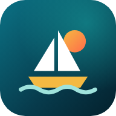

You are offline
Carriacou Connect needs an internet connection to show shops, products and your orders.
Check your signal or Wi-Fi and try again.
Shop the island, Online

Carriacou Connect needs an internet connection to show shops, products and your orders.
Check your signal or Wi-Fi and try again.
Shop the island, Online